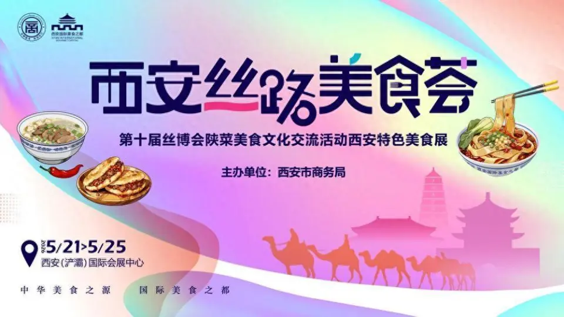

西安丝路美食荟 · 丝路美食文化节
一、活动基本信息
- 活动名称：西安丝路美食荟 · 陕菜美食文化交流活动
- 活动时间：2026年5月21日 — 5月25日
- 活动地点：西安市 · 丝路国际会展中心
- 活动主题：“中华美食之源·国际美食之都”
- 主办单位：陕西省商务厅、西安市人民政府、第十届丝博会组委会
活动规模：
- 汇聚20余家中华老字号、西安老字号及特色餐饮品牌
- 参展企业涵盖德发长、西安烤鸭、老孙家泡馍、贾三灌汤包等名店
- 预计接待10万+市民及游客
- 线上线下联动，百万级流量曝光
二、活动内容（演、展、娱、学四大板块）
演 · 国风文艺表演
每日定时上演大唐乐舞、秦腔选段、仿唐宫廷宴舞等精彩演出。邀请陕西本地艺术团体现场表演，再现唐代宫廷宴饮盛况，让市民和游客在品尝美食的同时，感受盛唐文化魅力。
展 · 老字号美食展销
德发长饺子宴、西安烤鸭、老孙家泡馍、贾三灌汤包、春发生葫芦头、同盛祥泡馍等20余家中华老字号集中亮相。每家老字号都带来各自的招牌菜和特色小吃，现场制作、现场品尝。同时设立陕菜非遗技艺展示区，邀请非遗传承人现场演示葫芦鸡、肉夹馍、Biangbiang面等传统美食的制作过程。
娱 · 趣味互动体验
设立“我是大胃王”挑战赛、“掰馍大赛”、“biangbiang面摔面体验”等互动环节。游客可以亲自上手体验掰馍、摔面、包饺子等传统美食制作，获胜者可获得老字号代金券和精美伴手礼。现场还设有“陕菜知识问答”、“美食打卡集章”等活动，寓教于乐。
学 · 美食技艺研习
邀请陕菜非遗传承人、老字号名厨现场授课，开设“陕菜小课堂”。每日两场，每场30分钟，教授肉夹馍打馍、羊肉泡馍掰馍、Biangbiang面摔面等基础技艺。游客可以边学边做，亲手制作陕西特色美食，完成后还能带走自己的“作品”，体验感十足。
三、部分参展老字号 查看老字号页面
- 德发长 — 中华老字号，饺子宴闻名中外
- 西安烤鸭店 — 中华老字号，西安烤鸭代表
- 老孙家 — 中华老字号，羊肉泡馍金字招牌
- 贾三灌汤包 — 中华老字号，灌汤包一绝
- 春发生 — 中华老字号，葫芦头泡馍
- 同盛祥 — 中华老字号，牛羊肉泡馍非遗技艺
- 樊记腊汁肉 — 中华老字号，肉夹馍百年老店
四、特色亮点

- 沉浸式体验：观众可参与掰馍、摔面、包饺子等互动，体验陕菜制作乐趣
- 非遗大师面对面：每天两场非遗技艺展示，传承人现场教学
- 老字号集中亮相：20余家中华老字号同台，一次吃遍西安
- 国风文艺表演：大唐乐舞、秦腔等每日上演，感受盛唐文化
- 线上线下联动：抖音、小红书等平台同步直播，百万网友在线互动
五、交通指南
- 地铁：乘坐地铁3号线至“香湖湾”站，B口出站步行10分钟
- 公交：乘坐233路、246路、262路至“丝路会展中心”站
- 自驾：导航搜索“西安丝路国际会展中心”，现场设有大型停车场
- 温馨提示：活动期间人流量较大，建议乘坐公共交通工具出行